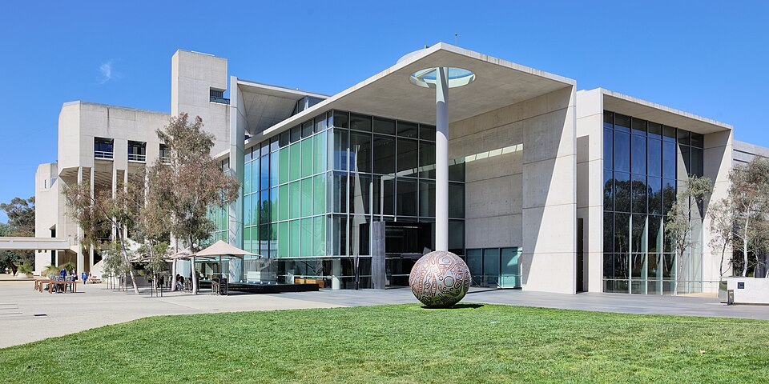
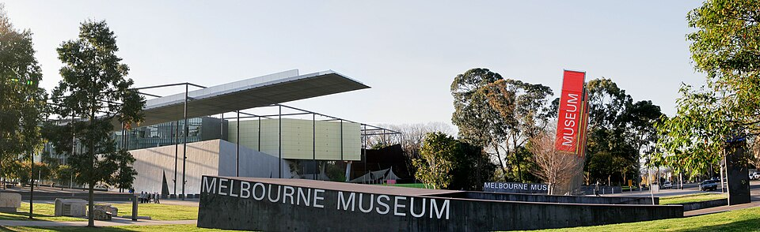
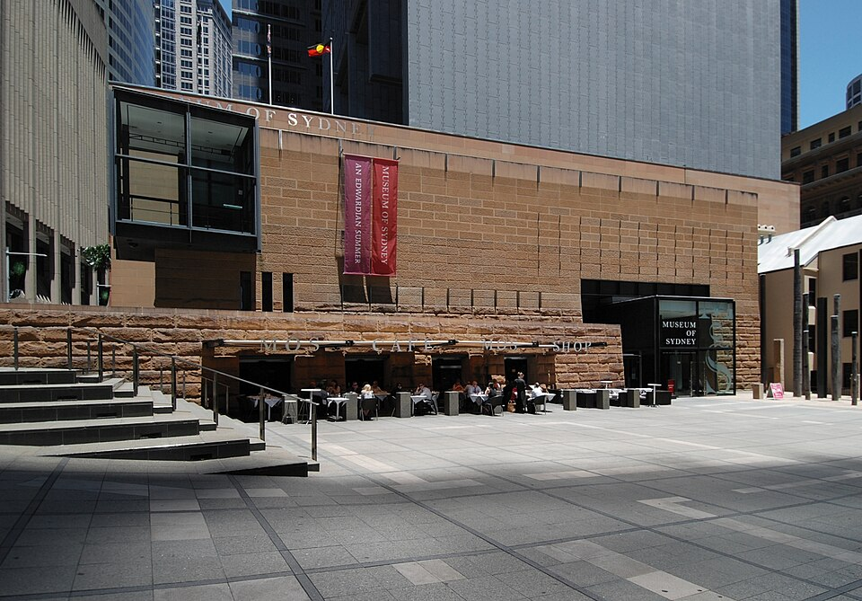
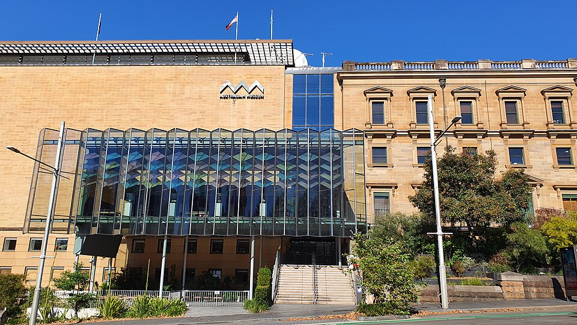

Искусство, природа и культура континента Океании

Основана в 1967 году. Хранит более 166 000 произведений искусства — от австралийского абстракционизма до произведений коренных народов. Здание галереи — архитектурный шедевр на берегу озера.
Сайт музея
Крупнейший музей Южного полушария. Современное здание с выставочными залами, оранжереей тропических бабочек и детским музеем. Коллекция охватывает природу, культуру и историю.
Сайт музея
Расположен на месте первого европейского поселения в Австралии. Экспозиция посвящена истории Сиднея — от коренных народов эоров до современного мегаполиса.
Сайт музея
Старейший музей Австралии, основанный в 1827 году. Более 21 миллиона природных и культурных экспонатов. Славится коллекцией минералов, скелетов динозавров и этнографией коренных народов.
Сайт музея